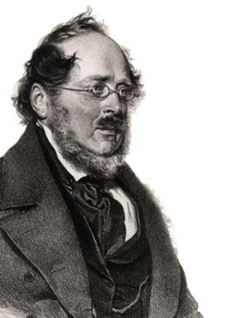
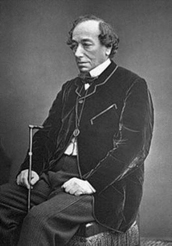
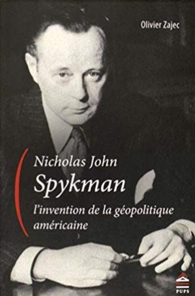
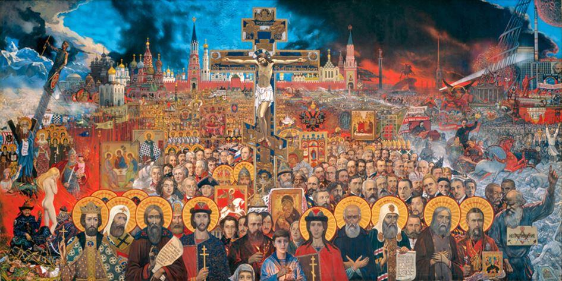
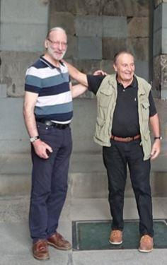

Avant d’aborder ce qui serait aujourd’hui la vision du monde des héritiers de Vladimir 1er, prince de Novgorod et Grand-Prince de la Rus’ de Kiev, je crois nécessaire d’essayer de comprendre pourquoi la Russie est l’objet de tant de haine de la part des élites qui gouvernent l’occident. Répondre à cette question me parait important car souvent, trop souvent de mon point de vue, depuis le règne de Pierre le Grand, le pouvoir en Russie a eu tendance parfois, à calquer sa politique en réaction ou à l’imitation de l’occident, sans percevoir toujours très clairement les forces véritables qui sont à l’œuvre dans la vision du monde occidentale. Cette tendance lourde a bien évidemment favorisé cette fameuse querelle opposant les slavophiles aux occidentalistes à laquelle l’URSS n’a pas échappé, et dans laquelle la Russie de Vladimir Poutine baigne encore, séparant deux visions du monde antagonistes qu’incarnent parfaitement aujourd’hui des personnalités comme Sergueï Glaziev pour le camp conservateur slavophile ou comme Alexeï Koudrine pour le camp libéral occidentaliste.
Définir ce que souhaite le camp libéral n’est pas très difficile, il nous suffit de regarder à quoi ressemble l’occident aujourd’hui, à savoir des sociétés où toute notion de solidarité a disparu, où l’argent règne en maître, où l’homosexualité et le mariage pour tous sont promus comme une norme, et où l’on augmente l’âge de la retraite tout en ouvrant les vannes de l’immigration au lieu de promouvoir la natalité. La faction libérale en Russie est pratiquement absente du champ électoral comme on l’a vu ces dernières années avec les résultats du parti Labloko, mais elle est en revanche surreprésentée dans les médias – contrairement à ce que l’on pense en occident – dans la sphère économique et au sein du gouvernement où aux côtés du Premier ministre siègent d’autres ministres qui ont parfaitement intégré la théorie de la « main invisible » dans leur vision du monde.
Il est plus difficile de définir précisément ce que souhaitent les conservateurs russes car il y a plusieurs approches possibles du conservatisme : il y a celle incarnée par le club Stolypine de M. Glaziev qui au rebours des idées libérales d’Adam Smith souhaiterait un Etat interventionniste sur le modèle de l’Allemagne de Bismarck influencée par les idées de Friedrich List et de son « protectionnisme éducateur ». Il existe aussi un conservatisme slaviste que l’on pourrait qualifier de social-chrétien et qui s’inspire d’auteurs comme Berdiaev, Soloviev, Iline, Dostoïevsky ou encore Soljenytsine mais qui ne semble pas avoir trouvé de traduction politique dans le paysage russe contemporain.
Et il existe enfin, grand paradoxe, un conservatisme communiste dont la permanence peut s’analyser non seulement comme une réaction aux dérives libérales de la Russie sous Boris Eltsine mais également comme un contrepoids à l’hégémonie du parti majoritaire – lorsque celui-ci est perçu comme trop libéral – comme on vient de le voir récemment à Vladivostok.
Autre paradoxe de la société russe contemporaine est celui incarné dans les plus hautes sphères de l’Etat où est promue une vision conservatrice et multipolaire du monde, en réaction à la vision unipolaire et totalitaire de l’occident, tout en ayant conservé au plan institutionnel une constitution occidentalo-compatible héritée des années Eltsine et permettant sur le plan économique la mise en place d’une praxis ultra-libérale que ne désavouerait pas l’École de Chicago. Il s’agit là d’une contradiction idéologique majeure que la Russie devra trancher tôt ou tard, et le plus tôt dans l’intérêt du peuple russe lui-même sera le mieux.
Pour mieux comprendre en quoi la Russie d’aujourd’hui incarne, presque malgré elle, l’opposition absolue au système occidental, il faut se pencher d’abord sur les origines profondes de la russophobie, ensuite nous devrons répondre à la question délicate « Que veut faire la Russie ? ».
1/ LES ORIGINES PROFONDES DE LA RUSSOPHOBIE
2/ QUE VEUT FAIRE LA RUSSIE ?
1/ LES ORIGINES PROFONDES DE LA RUSSOPHOBIE
Au fil du temps et de mes réflexions, j’ai acquis la conviction que l’on ne peut comprendre les événements géopolitiques sans avoir présent à l’esprit ce que le grand historien Fernand Braudel appelait la longue histoire et qui renvoie en quelque sorte à l’aphorisme de Nietzsche selon lequel « l’homme de l’avenir sera celui qui aura la plus longue mémoire ».
Si l’on refuse l’idée que la plupart des guerres, des coups d’état, des « révolutions de couleur » auxquels nous assistons relèvent d’une très ancienne vision du monde que j’appelle l’Idéologie anglo-saxonne, on se trouve alors dans la situation d’un médecin traitant un cancer avec de l’aspirine.
Qu’est-ce que l’idéologie anglo-saxonne ?
C’est ce que Kipling a appelé Le Grand Jeu lors de l’affrontement des empires russe et britannique dans ce qui n’était pas encore l’Afghanistan. Mais le Grand jeu c’était aussi l’éradication du catholicisme en Angleterre sous Cromwell, c’était la politique des William Pitt, père et fils, dans l’avènement de la révolution française et de la prise de contrôle de la France après la défaite de Waterloo, c’était la politique impériale de Benjamin Disraeli, c’était la guerre du Japon contre la Russie en 1905 et la 1ère révolution qui suivit, financée par les banques anglo-saxonnes, tout comme la révolution bolchevique de 1917, ce furent les deux guerres mondiales et ce jeu, car pour eux c’est un jeu, même s’il est souvent cruel, continue jusqu’à aujourd’hui avec l’Afghanistan, la Lybie, la Syrie, la Géorgie, l’Ukraine, le Yémen etc..
Je n’aurai pas le temps en quelques minutes de vous résumer 5 siècles d’histoire européenne et a fortiori mondiale, aussi, je voudrais juste esquisser devant vous quelques pistes de réflexion afin que vous creusiez vous-même dans cette direction si vous l’estimez nécessaire.
Le grand rêve de puissance et d’hégémonie mondiale de l’oligarchie anglaise est né, selon moi, au retour de l’expédition autour du monde du pirate Francis Drake le 26 septembre 1580 où la part du butin volé aux Espagnols et réservée à la reine Elisabeth représentait selon certaines sources une fois et demie le budget annuel du royaume. Francis Drake est probablement devenu après ses exploits le modèle à suivre et parmi ses nombreux admirateurs, un en particulier mérite d’être retenu, Walter Raleigh (cf. controverse École de la nuit), car il est le premier à avoir conceptualisé l’idée d’hégémonie anglo-saxonne sur le monde. En effet, ce gentilhomme, un peu pirate lui aussi, eut le temps d’écrire avant sa mort un ouvrage intitulé l’Histoire du monde et dans lequel il affirme : « Qui tient la mer tient le commerce du monde, qui tient le commerce tient la richesse, qui tient la richesse du monde tient le monde lui-même ».
C’est là, à partir de cet exploit de piraterie exceptionnel, qu’est née cette idée de parvenir à la suprématie mondiale par la puissance maritime et l’accaparement des richesses d’autrui.
Mais ce qu’il faut bien comprendre – et c’est cela qui est véritablement révolutionnaire – c’est que cette idée s’est transmise de génération en génération à travers les siècles au sein des élites anglo-saxonnes notamment chez le Britannique Mackinder dont la formule maîtresse est « Qui tient l’Europe orientale tient le heartland, qui tient le heartland domine l’île mondiale, qui domine l’île mondiale domine le monde » et qui s’est transformée chez l’Américain Spykman dans la formule plus ramassée « Qui contrôle le rimland gouverne l’Eurasie ; qui gouverne l’Eurasie contrôle les destinées du monde ».
Ce qu’il faut retenir, c’est qu’à trois siècles de distance, ces trois personnages partagent tous l’idée de domination du monde et c’est là véritablement qu’il faut comprendre la nature profonde de cette idéologie.
Mais alors en quoi cette idéologie anglo-saxonne serait-elle russophobe ?
Elle n’est pas spécifiquement russophobe, elle a d’abord été francophobe, puis hispanophobe, puis à nouveau francophobe, puis germanophobe, mais il se trouve qu’après les défaites successives de l’Espagne à la fin du XVIIème siècle, de la France en 1815, des empires centraux en 1918 et du monde germanique en 1945, il ne reste plus qu’un protagoniste sur le continent eurasiatique à s’opposer aux Anglo-Saxons, et c’est le peuple russe.
Voilà brièvement résumées, les causes profondes de la russophobie et tant que l’on n’a pas intégré cette vision de la longue histoire, on ne peut comprendre véritablement la nature des conflits qui sont en cours. Ces conflits sont des étapes, des épiphénomènes dans le Grand jeu de contrôle des destinées de l’humanité par la nomenklatura anglo-saxonne et la Russie est le dernier grand obstacle qui se dresse devant elle et voilà pourquoi elle doit disparaître. À n’importe quel prix.
Et elle a bien failli disparaître en 1991 quand elle perdit 1/5ème de son territoire et plus de 30 millions de ses concitoyens qui sont aujourd’hui, Kazakhes, Kirghizes, Ouzbèks ou Tadjiks. Elle a failli mourir aussi durant ces années 90 où elle fut pillée et saccagée ignominieusement par des prédateurs travaillant en étroite relation avec la finance anglo-saxonne.
Pour ceux qui voudraient un dessin explicite, je leur conseille de visiter l’académie Glazounov à Moscou où au 1er étage se trouve un immense tableau de cet illustre peintre et résumant parfaitement le martyre que subit la Russie durant ces années terribles.
Oui, je pense également que la fin de l’Union soviétique a été la plus grande catastrophe géopolitique du XXème siècle car elle a permis à l’occident d’avancer jusqu’aux frontières de la Russie et même de mettre la main sur son cœur historique, la Rus’ de Kiev.
À ce stade, que peut faire la Russie pour inverser le processus et mettre un terme à l’hégémonie totale de ceux qui veulent prendre en main les destinées du monde, car tout bien pesé, c’est bien de cela dont il s’agit : unipolaire ou multipolaire le monde de demain devra choisir et dans ce contexte d’antagonisme absolu, que pourra faire la Russie ?
Et tout d’abord…
2/ QUE VEUT FAIRE LA RUSSIE ?
Il peut paraître présomptueux, surtout ici, devant des citoyens russes, de poser cette question, mais si l’on se souvient de ce que disait Churchill lui-même à ce sujet, à savoir que « la Russie était un rébus enveloppé de mystère au sein d’une énigme », il n’est peut-être pas inutile d’ouvrir la matriochka pour essayer de voir ce qu’il y a dedans.
Je crois que la Russie a un rôle essentiel à jouer dans les années qui viennent pour restaurer un équilibre dans le monde mais c’est un message qui est difficile à faire passer car le tempérament russe est assurément peu porté à l’universel, du moins tel que le conçoivent les Français ou les Anglo-Saxons.
Pourtant la Russie a déjà par deux fois dans son existence, proclamé sa vérité dans le monde. La première fois, c’était au nom de la Sainte Alliance quand le Tsar Alexandre 1er tentait d’élever une digue contre les idées destructrices de la Révolution française. La deuxième fois, et c’est un paradoxe, c’est au nom des idéaux de cette même Révolution française que les bolcheviques répandront sur la terre l’idéal prolétarien.
On voit se dessiner en Russie, depuis le début des années 2000 une vision du monde multipolaire et qui semble vouloir s’afficher comme une altérité à l’idéologie occidentale.
Pour bien comprendre la réorientation de la Russie en ce début de XXIème siècle, il faut relire le discours fondamental de Vladimir Poutine à Munich en février 2007 qui entend mettre un terme à l’unipolarité anglo-saxonne et qui réaffirme une certaine conception westphalienne d’équilibre du monde.
Voilà ce que déclarait le Président de la Fédération de Russie : « J’estime que le monde unipolaire n’est pas seulement inadmissible pour le monde contemporain, mais qu’il est même tout à fait impossible. Non seulement parce que dans les conditions d’un leader unique, le monde contemporain (…) manquera de ressources militaro-politiques et économiques, mais, et c’est encore plus important, ce modèle est inefficace, car il ne peut en aucun cas reposer sur une base morale et éthique de la civilisation contemporaine ».
Dans ce discours, Vladimir Poutine remettait également en cause la prétendue primauté du droit étatsunien sur le droit international et dénonçait la volonté des Etats-Unis d’empiéter dans les domaines réservés des autres États, notamment à travers la sphère juridique.
Mais contester le modèle occidental en lui opposant la multipolarité – qui n’est qu’un concept creux – n’est pas suffisant. Tant que l’économie et les institutions russes fonctionneront avec le moteur occidental de l’idéologie libérale, la Russie sera confrontée à une contradiction interne qui sera mortelle à terme.
À l’idéologie des droits de l’homme, il faut opposer la primauté du droit des peuples.
Au libéralisme égoïste et destructeur qui ne favorise que l’oligarchie mondiale, il faut opposer l’interventionnisme de l’État souverain protecteur des plus faibles.
À la permissivité sans limite et à la destruction des valeurs fondamentales des sociétés humaines, il faut opposer la protection de la famille et des valeurs traditionnelles, y compris religieuses.
Ces quelques exemples montrent bien que la nature de la guerre totale qui oppose aujourd’hui l’occident à la Russie est bien culturelle et idéologique avant d’être militaire et je redoute fort que les conflits chauds ou tièdes comme ceux de Syrie ou du Donbass et dans lesquels les Anglo-Saxons entraînent la Russie aujourd’hui, ne soient que des leurres pour dissimuler le cheval de Troie que jour après jour les occidentaux mettent en place dans tout l’espace de la CEI.
Nous étions en Arménie la semaine dernière avec mon ami Jean-Michel Vernochet pour une série de conférences et de rencontres et nous avons pu mesurer la réalité de la présence étatsunienne dans ce pays ex-soviétique où ils ont installé leur deuxième plus grande ambassade dans le monde aux confins de la Caspienne, de la Mer Noire et de la Méditerranée : pas un programme culturel ou archéologique sans la présence du logo « USAID », pas un café qui n’arbore fièrement le sigle Coca-Cola et jusqu’à la Bibliothèque nationale d’Arménie qui abrite en son sein un « American Corner » où sont diffusées, entre autres, les œuvres de M. Brzezinski et de l’amiral Mahan. Même les Chinois sont présents à Erevan avec leur programme « China Aid ». Nous n’y avons pas vu de programme « Russia Aid » et dans ce pays qui comptait 100% de russophones il y a un quart de siècle, les jeunes générations ne parlent plus que l’anglais et dans moins d’un siècle il n’y aura plus que quelques savants distingués qui parleront encore la langue de Pouchkine.
Plus grave encore que ce que je viens de vous décrire en Arménie, est la reconnaissance de l’Église autocéphale d’Ukraine la semaine dernière par le patriarcat de Constantinople. Il s’agit là encore d’une catastrophe géopolitique ou géoreligieuse majeure pour le monde slave. À quoi sert de vaincre militairement le terrorisme manipulé par l’occident en Syrie quand le monde orthodoxe est menacé d’un schisme majeur ?
Je voudrais achever cette intervention en formulant le vœu que la Russie retrouve sa place, toute sa place dans le monde, notamment en reprenant la tête de file des pays non-alignés afin que se dresse contre la maladie occidentale une alliance de pays libres et souverains. La Russie pourrait proposer de remettre à jour la Charte de La Havane de 1948 et d’y entraîner tous les peuples qui veulent sortir de la spirale mortifère de l’idéologie anglo-saxonne. Quelques pays en Europe et dans le monde semblent aujourd’hui se réveiller et être prêts à sortir de l’état de vassalité et d’esclavage dans lequel ils sont plongés.
La Russie non seulement s’honorerait à les y aider, mais ce faisant, j’en suis persuadé, elle se sauverait elle-même.
Partager cette page